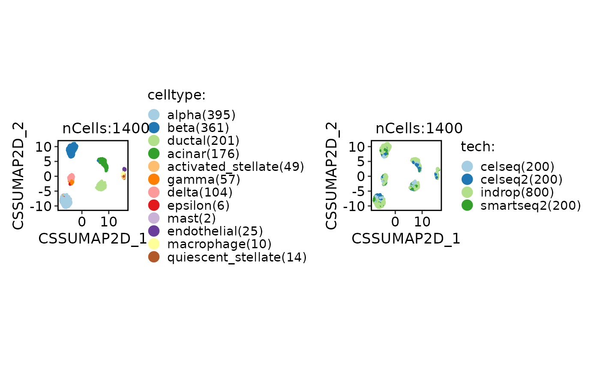

Single-cell reference mapping with CSS method
Usage
RunCSSMap(
srt_query,
srt_ref,
query_assay = NULL,
ref_assay = srt_ref[[ref_css]]@assay.used,
ref_css = NULL,
ref_umap = NULL,
ref_group = NULL,
projection_method = c("model", "knn"),
nn_method = NULL,
k = 30,
distance_metric = "cosine",
vote_fun = "mean"
)Arguments
- srt_query
An object of class Seurat storing the query cells.
- srt_ref
An object of class Seurat storing the reference cells.
- query_assay
A character string specifying the assay name for the query cells. If not provided, the default assay for the query object will be used.
- ref_assay
A character string specifying the assay name for the reference cells. If not provided, the default assay for the reference object will be used.
- ref_css
A character string specifying the name of the CSS reduction in the reference object to use for calculating the distance metric.
- ref_umap
A character string specifying the name of the UMAP reduction in the reference object. If not provided, the first UMAP reduction found in the reference object will be used.
- ref_group
A character string specifying a metadata column name in the reference object to use for grouping.
- projection_method
A character string specifying the projection method to use. Options are "model" and "knn". If "model" is selected, the function will try to use a pre-trained UMAP model in the reference object for projection. If "knn" is selected, the function will directly find the nearest neighbors using the distance metric.
- nn_method
A character string specifying the nearest neighbor search method to use. Options are "raw", "annoy", and "rann". If "raw" is selected, the function will use the brute-force method to find the nearest neighbors. If "annoy" is selected, the function will use the Annoy library for approximate nearest neighbor search. If "rann" is selected, the function will use the RANN library for approximate nearest neighbor search. If not provided, the function will choose the search method based on the size of the query and reference datasets.
- k
An integer specifying the number of nearest neighbors to find for each cell in the query object.
- distance_metric
A character string specifying the distance metric to use for calculating the pairwise distances between cells. Options include: "pearson", "spearman", "cosine", "correlation", "jaccard", "ejaccard", "dice", "edice", "hamman", "simple matching", and "faith". Additional distance metrics can also be used, such as "euclidean", "manhattan", "hamming", etc.
- vote_fun
A character string specifying the function to be used for aggregating the nearest neighbors in the reference object. Options are "mean", "median", "sum", "min", "max", "sd", "var", etc. If not provided, the default is "mean".
Examples
data("panc8_sub")
srt_ref <- panc8_sub[, panc8_sub$tech != "fluidigmc1"]
srt_query <- panc8_sub[, panc8_sub$tech == "fluidigmc1"]
srt_ref <- Integration_SCP(srt_ref, batch = "tech", integration_method = "CSS")
#> [2023-11-20 16:31:25.31845] Start CSS_integrate
#> [2023-11-20 16:31:25.385744] Spliting srtMerge into srtList by column tech... ...
#> [2023-11-20 16:31:25.56346] Checking srtList... ...
#> Data 1/4 of the srtList is raw_normalized_counts. Perform NormalizeData(LogNormalize) on the data ...
#> Perform FindVariableFeatures on the data 1/4 of the srtList...
#> Data 2/4 of the srtList is raw_normalized_counts. Perform NormalizeData(LogNormalize) on the data ...
#> Perform FindVariableFeatures on the data 2/4 of the srtList...
#> Data 3/4 of the srtList is raw_counts. Perform NormalizeData(LogNormalize) on the data ...
#> Perform FindVariableFeatures on the data 3/4 of the srtList...
#> Data 4/4 of the srtList is raw_counts. Perform NormalizeData(LogNormalize) on the data ...
#> Perform FindVariableFeatures on the data 4/4 of the srtList...
#> Use the separate HVF from srtList...
#> Number of available HVF: 2000
#> [2023-11-20 16:31:27.375019] Finished checking.
#> [2023-11-20 16:31:27.914751] Perform ScaleData on the data...
#> [2023-11-20 16:31:27.995179] Perform linear dimension reduction (pca) on the data...
#> [2023-11-20 16:31:28.380261] Perform integration(CSS) on the data...
#> CSS integration using Reduction(CSSpca, dims:1-10) as input
#> Loading required package: Seurat
#> Loading required package: SeuratObject
#> Loading required package: sp
#>
#> Attaching package: ‘sp’
#> The following object is masked from ‘package:IRanges’:
#>
#> %over%
#> ‘SeuratObject’ was built under R 4.3.0 but the current version is 4.3.2; it is recomended that you
#> reinstall ‘SeuratObject’ as the ABI for R may have changed
#>
#> Attaching package: ‘SeuratObject’
#> The following object is masked from ‘package:IRanges’:
#>
#> intersect
#> The following object is masked from ‘package:S4Vectors’:
#>
#> intersect
#> The following object is masked from ‘package:BiocGenerics’:
#>
#> intersect
#> The following object is masked from ‘package:base’:
#>
#> intersect
#> Warning: The following arguments are not used: force.recalc
#> Warning: The following arguments are not used: force.recalc
#> [2023-11-20 16:31:31.243986] Perform FindClusters (louvain) on the data...
#> [2023-11-20 16:31:31.347949] Reorder clusters...
#> Perform nonlinear dimension reduction (umap) on the data...
#> Non-linear dimensionality reduction(umap) using Reduction(CSS, dims:1-22) as input
#> Found more than one class "dist" in cache; using the first, from namespace 'BiocGenerics'
#> Also defined by ‘spam’
#> Found more than one class "dist" in cache; using the first, from namespace 'BiocGenerics'
#> Also defined by ‘spam’
#> Non-linear dimensionality reduction(umap) using Reduction(CSS, dims:1-22) as input
#> Found more than one class "dist" in cache; using the first, from namespace 'BiocGenerics'
#> Also defined by ‘spam’
#> Found more than one class "dist" in cache; using the first, from namespace 'BiocGenerics'
#> Also defined by ‘spam’
#> [2023-11-20 16:31:38.990704] CSS_integrate done
#> Elapsed time: 13.67 secs
CellDimPlot(srt_ref, group.by = c("celltype", "tech"))

# Projection
srt_query <- RunCSSMap(srt_query = srt_query, srt_ref = srt_ref, ref_css = "CSS", ref_umap = "CSSUMAP2D")
#> Detected srt_query data type: raw_normalized_counts
#> Detected srt_ref data type: log_normalized_counts
#> Warning: Data type is unknown or different between srt_query and srt_ref.
#> Run CSS projection
#> Error in validObject(.Object): invalid class “DimReduc” object: dimension names for ‘cell.embeddings’ must be positive integers
ProjectionPlot(srt_query = srt_query, srt_ref = srt_ref, query_group = "celltype", ref_group = "celltype")
#> Error in srt_query[[query_reduction]]: ‘ref.embeddings’ not found in this Seurat object
#>